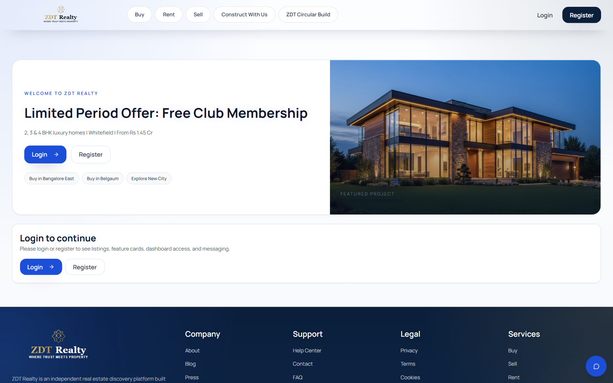
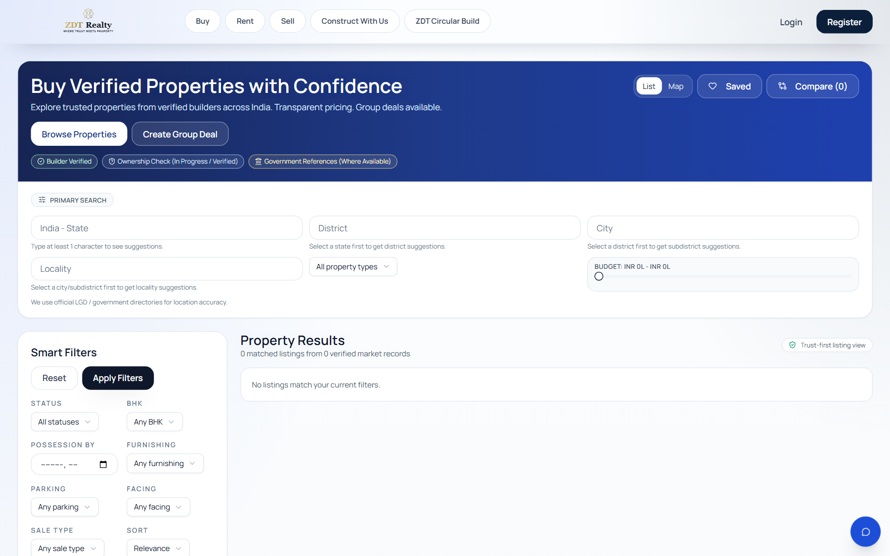
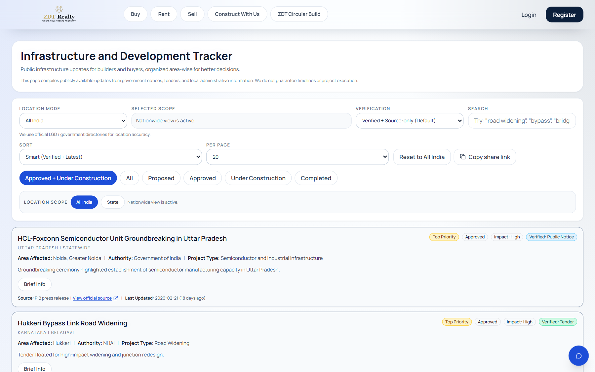
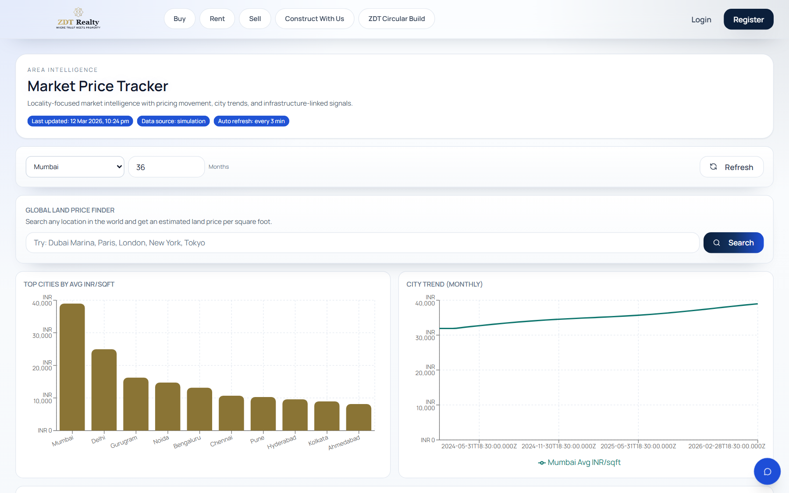
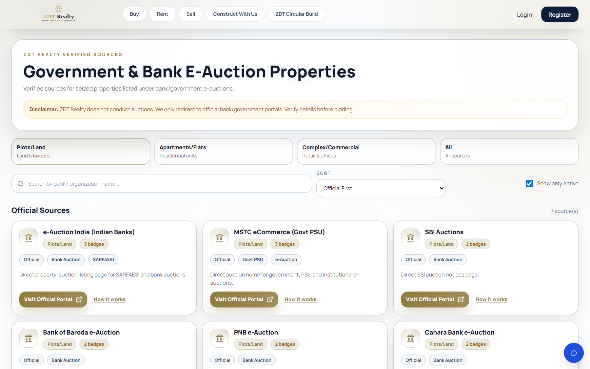
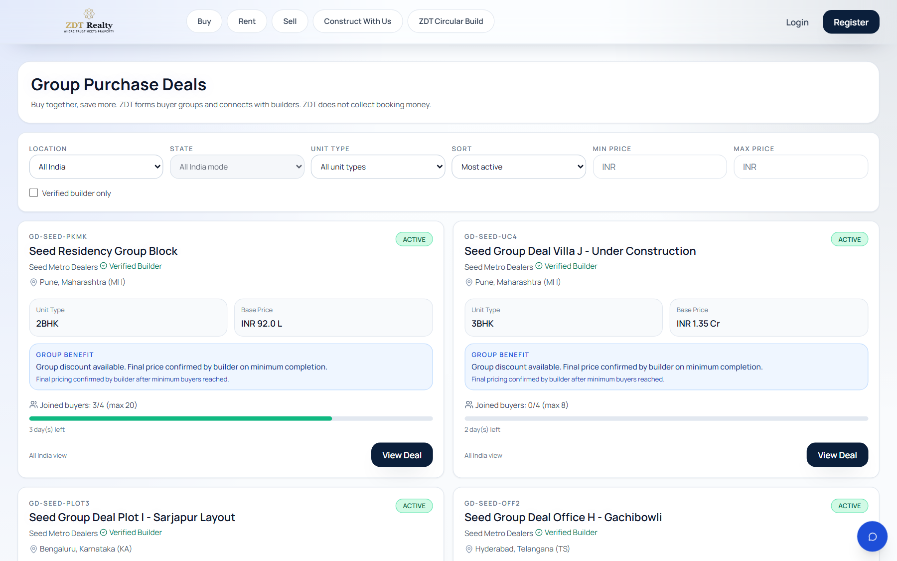
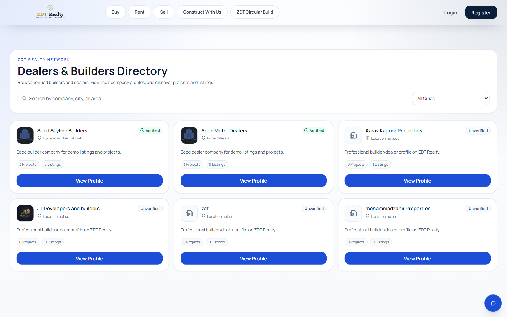
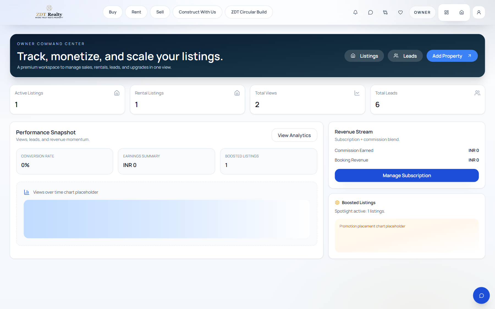

ZDT Realty
Trusted Real Estate Intelligence + Operations Platform
Browser preview version of the founding-round deck. If the `.pptx` does not preview in your IDE, this page will still open normally in any browser.
Slide 1
Platform Overview
The homepage acts as the product map across marketplace, intelligence, services, and operator workflows.

Homepage: entry point into every major feature block
- ZDT is positioned as more than a listing portal. The landing experience already exposes marketplace, insights, infrastructure, invest, and operator modules.
- This is useful in your interview because it shows clear product breadth from the first screen.
- It supports the pitch that the platform is multi-sided and modular by design.
Slide 2
Consumer Marketplace
The buyer journey includes search, listing evaluation, and conversion actions.

Buy marketplace with filters, listing cards, and saved-search flow
- Buy and rent are built as full marketplace experiences, not static catalog pages.
- Users can save searches, shortlist properties, compare options, and move into direct enquiry or visit-request flows.
- This creates the demand-side engagement layer that supports retention and lead generation.
Slide 3
Decision Intelligence Layer
A major differentiator is that ZDT supports decisions with market and infrastructure context.

Infrastructure tracker with verification controls

Market tracker with pricing and city trends
- Infrastructure updates are grouped by verification level and geography.
- Market insights provide pricing movement, city comparison, and decision-support context.
- This layer moves ZDT from a browsing product to a decision-support platform.
Slide 4
Trust and Differentiation
These modules show product differentiation beyond standard property search.

Government and bank e-auction directory

Group purchase deal flow
- ZDT exposes high-trust sourcing opportunities such as official e-auction portals.
- Group deals introduce demand aggregation while keeping compliance boundaries clear.
- This is a strong interview angle because it shows differentiated product thinking, not generic listing replication.
Slide 5
B2B Growth Engine
The platform also works as operating software for builders and dealers.

Dealers & builders proposition and company operating model
- Builders and dealers get project tools, team access control, promotions, and trust-building features.
- This creates subscription, enterprise, and promotion-based revenue opportunities.
- It also improves supply quality on the consumer side of the platform.
Slide 6
Owner Monetization Layer
Owners are treated as growth users with dashboards and monetization hooks.

Owner dashboard with listings, leads, views, conversion, and revenue signals
- Owners can track listings, leads, views, conversion rate, subscriptions, and boosts from one workspace.
- This supports direct monetization through plan upgrades and visibility products.
- It helps position ZDT as a business platform, not only a consumer portal.
Slide 7
Closing Message
Use this line in the interview:
- Owner subscriptions and boosts
- Builder and dealer plans
- Featured listings and sponsored placements
- Promotion inventory and premium tools
- Later enterprise integrations
ZDT Realty is evolving from a listing portal into a trusted real estate operating system for India.
That is the strongest short positioning for a founding-round or interview pitch.